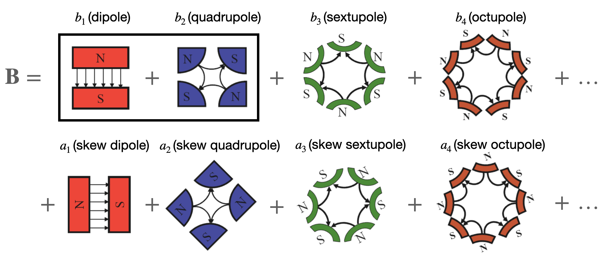
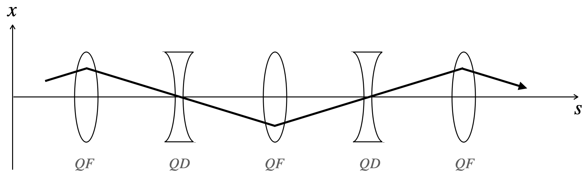
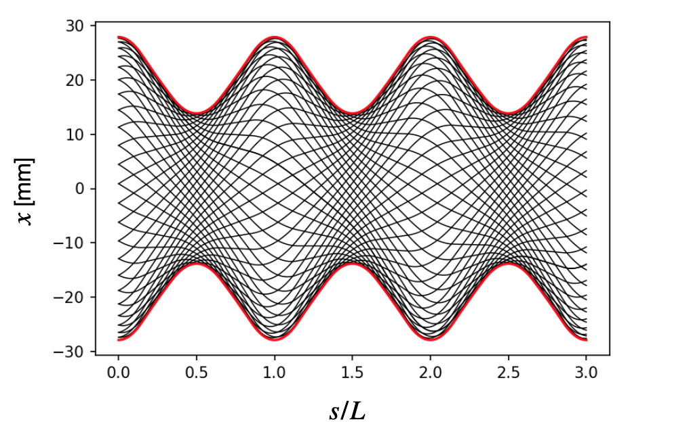

import os
import sys
import matplotlib
from matplotlib import animation
from matplotlib import pyplot as plt
import numpy as np
import proplot as pplt
from psdist import ap
pplt.rc['animation.ffmpeg_path'] = '/usr/local/bin/ffmpeg'
pplt.rc['animation.html'] = 'jshtml'
pplt.rc['animation.embed_limit'] = np.inf
pplt.rc['figure.facecolor'] = 'white'
pplt.rc['grid'] = False
pplt.rc['savefig.dpi'] = 'figure'Parametric oscillators
Describing particle motion in the presence of time-dependent linear forces.
author: Austin Hoover date: ‘2021-01-29’ description: Describing particle motion in the presence of time-dependent linear forces. output-file: 2021-01-29-parametric_oscillators.html toc: true image: cs_ellipse.png categories: [physics, accelerators, classical mechanics] execute: echo: false enabled: false cache: true freeze: false jupyter: python3
format: max-width: 600px
title: “Parametric oscillators” author: Austin Hoover date: ‘2021-01-29’ description: Describing particle motion in the presence of time-dependent linear forces. output-file: 2021-01-29-parametric_oscillators.html toc: true
format: html: code-fold: false
This post presents the solution to a general problem: what is the motion of a particle in one dimension in the presence of time-dependent, linear, periodic forces? This amounts to solving the following equation of motion:
\[\frac{d^2x}{dt^2} + k(t)x = 0,\]
where \(k(t + T) = k(t)\) for some \(T\). This is a parametric oscillator, a harmonic oscillator whose physical properties are not static. For example, the oscillations of a pendulum (in the small angle approximation) on the surface of a planet whose gravitational pull varies periodically would be described by the above equation. The solution to this equation was derived by George William Hill in 1886 to study lunar motion, and for this reason it is known as Hill’s equation. It also finds application in areas such as condensed matter physics, quantum optics, and accelerator physics. After setting up the physical problem, we will examine the solutions and discuss their relevance to the last application, accelerator physics.
Particle accelerators as parametric oscillators
Particle accelerators are machines that produce groups of charged particles (beams), increase their kinetic energy, and guide them to a target. These machines are invaluable to modern scientific research. The most famous examples are colliders, such as the LHC, in which two beams are smashed together to generate fundamental particles.

A lesser known fact is that the fields of condensed matter physics, material science, chemistry, and biology also benefit tremendously from accelerators; this is due to the effectiveness of scattering experiments in which the deflection of a beam after colliding with a target is used to learn information about the target. The scattered beam is composed of neutrons in spallation neutron sources such as SNS, electrons in electron scattering facilities such as CEBAF, or photons in synchrotron light sources such as APS. In addition to scientific research, accelerators find use in medicine, particularly for cancer treatment, and also in various industrial applications.
There are generally a few beam properties which are very important to experimentalists; in colliders it is the energy and luminosity, in spallation sources it is the intensity, and in light sources it is the brightness. There is thus a constant need to push these parameters to new regions. For example, below is the famous Livingston plot which shows the energy achieved by various machines over the past century.

There are many physics issues associated with the optimization of these beam parameters. Accelerator physics is a field of applied physics which studies these issues. The task of the accelerator physicist is to understand, control, and measure the journey of the beam from its creation to its final destination. The difficulty of this task has grown over time; the improvement accelerator performance has brought with it a staggering increase in size and complexity. The construction and operation of modern accelerators generally requires years of planning, thousands of scientists and engineers, and hundreds of millions or even billions of dollars. Despite this complexity, the underlying physics principles are quite simple, and the single particle motion in one of these machines can be understood analytically if a few approximations are made. In the end we will arrive at Hill’s equation.
There are three basic tasks an accelerator has to accomplish. First, it must increase the beam energy (acceleration). Second, it must guide the beam along a predetermined path (steering). Third, it must ensure the beam particles remain close together (focusing). It is helpful to use a coordinate system in which the \(s\) axis points along the design trajectory, and the \(x\) and \(y\) axes defined in the plane transverse to \(s\). In this way the motion is broken up into transverse and longitudinal dynamics.

How are these tasks accomplished? Well, particles are charged, and the force on a point charge in an electromagnetic field is given by
\[\mathbf{F} = q\left({\mathbf{E} + \mathbf{v} \times \mathbf{B}}\right),\]
where \(q\) is the particle charge, \(\mathbf{v}\) is the particle velocity, \(\mathbf{E}\) is the electric field, and \(\mathbf{B}\) is the magnetic field. An accelerator consists of a series of elements, each with their own \(\mathbf{E}\) and \(\mathbf{B}\); the collection of these elements is called a lattice. We need to determine which electric and magnetic fields to use.
The first task, acceleration, is not the focus of this post. The remaining tasks, steering and focusing, concern the motion in the transverse plane. \(\mathbf{B}\) fields, not \(\mathbf{E}\) fields, are used since their effect grows with increased particle velocity. Any transverse magnetic field \(\mathbf{B} = (B_x, B_y)^T\) can be written using a multipole expansion
\[B_y - iB_x = \sum_{n=1}^{\infty}\left({b_n - ia_n}\right)\left(\frac{x + iy}{r_0}\right)^{n-1}.\]
We then have the normal multiple coefficients \(\{b_n\}\), and the skew multipole coefficients \(\{a_n\}\). The field lines corresponding to the first few terms are shown below.

The dipole field \(\mathbf{B} \propto \hat{y}\) is perfect for steering, producing the force \(\mathbf{F} \propto -\hat{x}\) for a particle moving into the page. The quadrupole field \(\mathbf{B} \propto y\hat{x} + x\hat{y}\) produces the force \(\mathbf{F}_{quad} \propto -x\hat{x} + y\hat{y}\), which is focusing in the horizontal direction, but defocusing in the vertical direction; however, net focusing can still be achieved by alternating the direction of the quadrupoles. This is analogous to a beam of light passing through a series of converging and diverging lenses. If the spacing and curvature of the lenses is correctly chosen, a net focusing can be achieved.

The forces which result from these fields are linear, meaning they are proportional the \(x\) or \(y\) but not \(x^2\), \(y^3\), etc., and they are uncoupled, meaning the dynamics in the \(x\) and \(y\) dimensions are independent. Now, we may ask, can we really produce a perfect dipole or quadrupole field? The answer is no. In reality there will always be higher order multipoles present in the field, but people work very hard to ensure these are much smaller than the desired multipole. This video shows a bit of the construction process for these magnets.
For small oscillations, the equations of motion reduce to
\[ x'' \approx -\frac{q}{mc \beta_s \gamma_s} B_y(x, y, s), \]
\[ y'' \approx +\frac{q}{mc \beta_s \gamma_s} B_x(x, y, s), \]
where \(x' = dx/ds\), \(m\) is the particle mass, \(c\) is the speed of light in a vacuum, \(\beta_s\) is the particle speed divided by \(c\), and \(\gamma_s = (1 - \beta_s^2)^{-1/2}\). (For simplicity, the curved coordinate system has not been taken into account). We will ignore nonlinear terms since they greatly complicate the dynamics. We will also ignore coupling between the planes. With these approximations, we arrive at the equation of motion for a single particle in the transverse plane:
\[x'' + k(s)x = 0.\]
Solution to Hill’s equation
The general solution to Hill’s equation is given by
\[x(s) = \sqrt{2J}\,w(s) \cos\left({\mu(s) + \delta}\right).\]
This introduces an amplitude \(w(s) = w(s + L)\) which we call the envelope function, as well as a phase \(\mu\), both of which depend on \(s\). The constants \(J\) and \(\delta\) are determined by the initial conditions. Let’s plot this trajectory in a FODO (focus-off-defocus-off) lattice, which consists of evenly spaced focusing and defocusing quadrupoles. Here is the focusing strength within the lattice (QF is the focusing quadrupole and QD is the defocusing quadrupole):

For now we can think of the lattice as repeating itself forever in the \(s\) direction. Each black line below is represents the trajectory for a different initial position and slope; although the individual trajectories look rather complicated, the envelope function has a very simple form.

The particle motion becomes much easier to interpret if we observe it in position-momentum space, aka phase space. The following animation shows the evolution of the particle phase space coordinates at a single position in the lattice. The position shown is \(s = nL/4\), where \(n\) is the period number, which corresponds to the midpoint between the focusing and defocusing quadrupoles.
# This is a test code block.
import numpy as np
x = np.random.normal(size=5)
print('x:', x)x: [-1.52068321 -1.23150828 -1.76568792 0.42067318 -0.47206814]n_turns = 34
beta = 10.0
alpha = 1.25
nu = 0.1792
V = ap.norm_mat(alpha, beta)
P = ap.phase_adv_mat(2.0 * np.pi * nu)
M = np.linalg.multi_dot([V, P, np.linalg.inv(V)])
X = [[np.sqrt(20.0), 0.0]]
for turn in range(n_turns):
X.append(np.matmul(M, X[-1]))
X = np.array(X)
# plot.rc['grid'] = False
pplt.rc['savefig.dpi'] = 200
xmax, xpmax = 1.5 * np.max(X, axis=0)
fig, ax = pplt.subplots()
ax.format(
xlabel="x [mm]", ylabel="x' [mrad]",
xlim=(-xmax, xmax), ylim=(-xpmax, xpmax),
xspineloc='bottom', yspineloc='left',
)
plt.close()
kws = dict(marker='.', mec='None', lw=0, color='black', ms=7.5,)
old_line, = ax.plot([], [], alpha=0.3, **kws)
line, = ax.plot([], [], **kws)
def update(i):
x, xp = X[i, :2]
old_line.set_data(X[:i, 0], X[:i, 1])
line.set_data(X[i, 0], X[i, 1])
ax.set_title('Turn {}'.format(i))
# update(12)
anim = animation.FuncAnimation(fig, update, frames=n_turns)
anim.save('tbt.gif')
########################################################################################
################################################################################
The particle jumps around an ellipse in phase space. The shape and orientation of the ellipse will change if we look at a different position in the lattice, but its area will be the same. So, the motion is determined by the dimensions and oriention of this ellipse throughout the lattice, as well as the location of the paricle on the ellipse boundary. This motivates the definition of the so-called Twiss parameters, which were first introduced by Courant and Snyder in 1958:
\[\beta = w^2, \quad \alpha = -\frac{1}{2}\beta', \quad \gamma = \frac{1 + \alpha^2}{\beta}.\]
The dimensions of the phase space ellipse are nicely described by these parameters:

The maximum extent of the ellipse is determined by \(\beta\) in the \(x\) direction and \(\gamma\) in the \(y\) direction. \(\alpha\) is proportional to the slope of the \(\beta\) function, and so determines the tilt angle of the ellipse. The position of a particle on the ellipse is given by the phase \(\mu\). Finally, the invariant of the motion corresponding to the ellipse area is proportional to \(2J = \beta {x'}^2 + 2\alpha xx' + \gamma x^2\) for any \(x\) and \(x'\). The \(\beta\) functions and phase advances in both dimensions are extremely important to measure and control in a real machine.
A helpful tool to pair with the parameterization we just introduced is the transfer matrix, a matrix which connects the phase space coordinates at two different positions:
\[\begin{bmatrix} x \\ x' \end{bmatrix}_{s + L} = \mathbf{M}\begin{bmatrix} x \\ x' \end{bmatrix}_{s}\]
The transfer matrix can be written as \(\mathbf{M} = \mathbf{V}\mathbf{P}\mathbf{V}^{-1}\), where
\[\mathbf{V} = \frac{1}{\sqrt{\beta}} \begin{bmatrix} \beta & 0 \\ -\alpha & 1 \end{bmatrix}\] and \[ \mathbf{P} = \begin{bmatrix} \cos\mu & \sin\mu \\ -\sin\mu & \cos\mu \end{bmatrix} \]
The effect of \(\mathbf{V}^{-1}\) is to deform the phase space ellipse into a circle while preserving its area. \(\mathbf{P}\) is then just a rotation in phase space, and \(\mathbf{V}\) then transforms back into a tilted ellipse. This is illustrated below. \(\mathbf{V}\) can be thought of as a time-dependent transformation which removes the variance in the focusing strength, turning the parametric oscillator into a simple harmonic oscillator. It is often called the Floquet transformation.

Conclusion
We’ve presented the solution to Hill’s equation, which describes a parameteric oscillator. The equation pops up in multiple areas, but we focused on its application in accelerator physics, in which Hill’s equation describes the transverse motion of a single particle in an accelerator with perfectly linear magnetic fields.
The solution is best understood geometrically: particles move around the surface of an ellipse in phase space, the area of which is an invariant of the motion. The dimensions and orientation of the ellipse are determined by \(\alpha\) and \(\beta\), and the location of the paricle on the ellipse boundary is determined by \(\mu\). These parameters can be used to construct a time-dependent transformation (\(\mathbf{V}\)) which turns the parametric oscillator into a simple harmonic oscillator.
The next post will examine how this treatment can be extended to include coupling between the horizontal and vertical dimensions.
Citation
BibTeX citation:
@online{hoover2021,
author = {Austin Hoover},
editor = {},
title = {Parametric Oscillators},
date = {2021-01-29},
langid = {en}
}
For attribution, please cite this work as:
Austin Hoover. 2021. “Parametric Oscillators.” January 29,
2021.